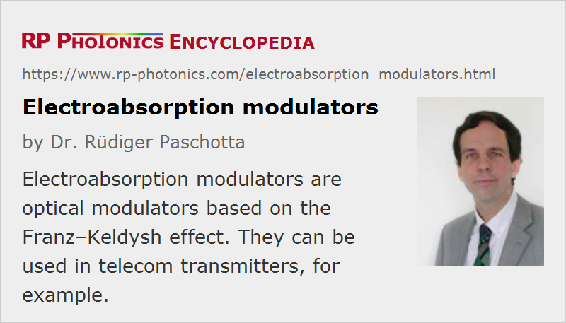

Electroabsorption Modulators
Acronym: EAM
Definition: optical modulators based on the Franz–Keldysh effect
More general terms: optical modulators
German: Elektroabsorptionsmodulatoren
Categories: photonic devices, optoelectronics
How to cite the article; suggest additional literature
Author: Dr. Rüdiger Paschotta
An electroabsorption modulator (or electro-absorption modulator) is a semiconductor device which can be used for controlling (modulating) the intensity of a laser beam via an electric voltage (→ intensity modulators). Its principle of operation is based on the Franz–Keldysh effect [1, 2], i.e., a change in the absorption spectrum caused by an applied electric field, which changes the band gap energy (thus the photon energy of an absorption edge) but usually does not involve the excitation of carriers by the electric field.
Most electroabsorption modulators are made in the form of a waveguide with electrodes for applying an electric field in a direction perpendicular to the modulated light beam. For achieving a high extinction ratio, one usually exploits the quantum-confined Stark effect in a quantum well structure.
Compared with electro-optic modulators, electroabsorption modulators can operate with much lower voltages (a few volts instead of hundreds of thousands of volts). They can be operated at very high speed; a modulation bandwidth of tens of gigahertz can be achieved, which makes these devices useful for optical fiber communications. A convenient feature is that an electroabsorption modulator can be integrated with a distributed feedback laser diode on a single chip to form a data transmitter in the form of a photonic integrated circuit. Compared with direct modulation of the laser diode, a higher bandwidth and reduced chirp can be obtained.
Suppliers
The RP Photonics Buyer's Guide contains 1 supplier for electroabsorption modulators.
Questions and Comments from Users
Here you can submit questions and comments. As far as they get accepted by the author, they will appear above this paragraph together with the author’s answer. The author will decide on acceptance based on certain criteria. Essentially, the issue must be of sufficiently broad interest.
Please do not enter personal data here; we would otherwise delete it soon. (See also our privacy declaration.) If you wish to receive personal feedback or consultancy from the author, please contact him e.g. via e-mail.
By submitting the information, you give your consent to the potential publication of your inputs on our website according to our rules. (If you later retract your consent, we will delete those inputs.) As your inputs are first reviewed by the author, they may be published with some delay.
Bibliography
| [1] | L. V. Keldysh, “Behaviour of non-metallic crystals in strong electric fields”, J. Exp. Theor. Phys. (USSR) 33, 994 (1957); translation: Sov. Phys. JETP 6, 763 (1958) |
| [2] | W. Franz, “Einfluß eines elektrischen Feldes auf eine optische Absorptionskante”, Z. Naturforsch., Teil A 13, 484 (1958) |
| [3] | E. Lach et al., “Application of electroabsorption modulators for high-speed transmission systems”, J. Opt. Fiber Commun. Rep. 2, 140–170 (2005) |
| [4] | J. Liu et al., “Waveguide-integrated, ultralow-energy GeSi electro-absorption modulators”, Nature Photon. 2, 433 (2008), doi:10.1038/nphoton.2008.99 |
See also: electro-optic modulators, optical modulators, intensity modulators
and other articles in the categories photonic devices, optoelectronics
|  |
If you like this page, please share the link with your friends and colleagues, e.g. via social media:
These sharing buttons are implemented in a privacy-friendly way!